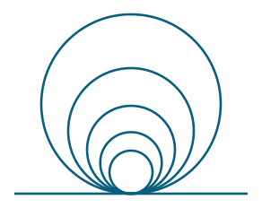
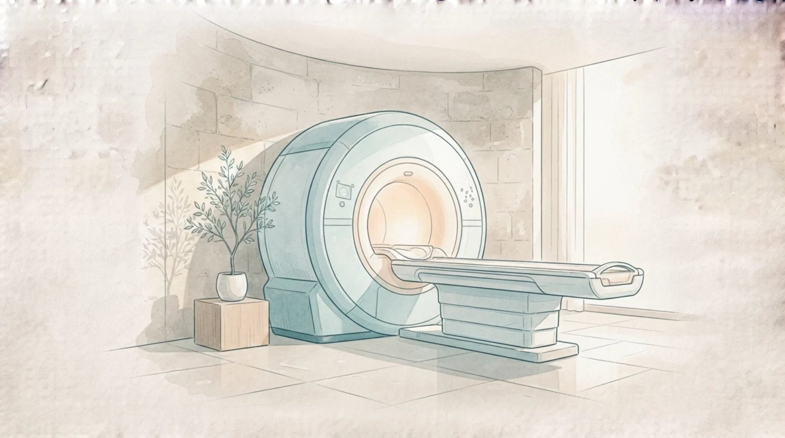
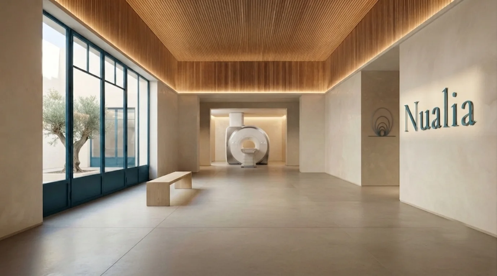
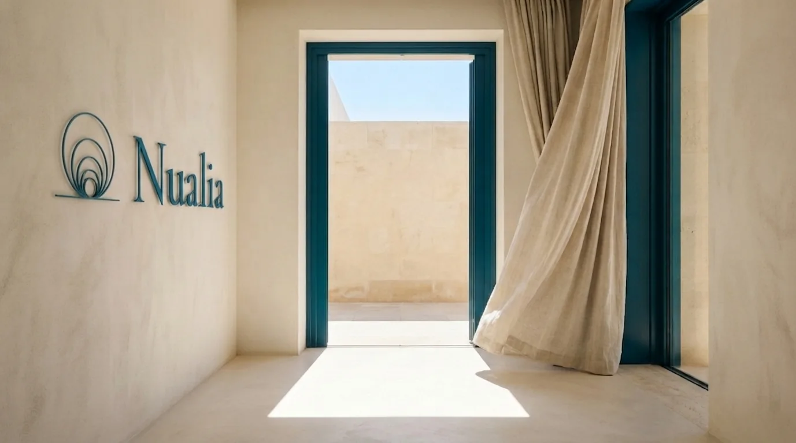
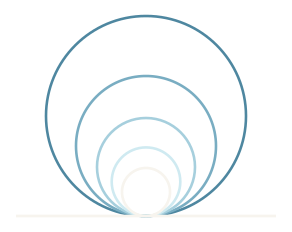

A whole-body MRI, once a year, in a place that will feel nothing like a hospital. Read and signed by consultant radiologists, and explained to you by a doctor, so that each year you know what has changed, and what has not.

The idea
Cut a trunk and the whole life is there. One ring for every year. A generous year is a wide, even ring. A hard one is narrow or malformed, and it stays legible a century later. Nobody recorded it; the record accumulated because the tree kept growing.
Your body keeps the same kind of record. It simply keeps it on the inside, where nobody has been looking year after year. A scan taken once is a photograph. A scan taken every year is a ring.
Why a membership, not a scan
One scan is a snapshot, and a snapshot is where most screening stops. The value compounds: each year is measured against your own previous years rather than against an average, which is what makes a signal meaningful and a false alarm rarer.
The day itself
You are met by name, not by a queue. A robe, not a gown. Somewhere quiet to leave your things.
About an hour, lying still. No radiation, no injection for the whole-body scan, no hospital smell.
Reviewed with licensed software, then read and signed by a consultant radiologist. Nothing leaves unsigned.
A doctor takes you through it in plain language: what was seen, what it means, and what, if anything, happens next.
Inside the scan
The complete scan from head to mid-thigh, every year, then dedicated sequences organ by organ: the brain in 3D, the spine, a measured liver, and the prostate, pelvis or breast by age and sex.


The machine is the least interesting thing in the building.
Honestly
Most of this category would rather not print the right-hand column. We think it is the most persuasive thing on the page.
Governance
Every scan is read and signed by a licensed consultant radiologist. Software assists the read; a doctor is accountable for it.
If something needs attention we refer you to the right specialist. We have no incentive in what happens next, and that is deliberate.
Screening finds things that would never have harmed you. You will understand that before you enter the machine, not after.
Your images and reports belong to you, held under the health data rules of the country the centre operates in, and portable if you leave.
Who comes
She has an executive check-up every year and it has never once looked inside her head, her pancreas or her ovaries.
He is fine. He would simply rather know that than assume it.
Screening spreads by conversation, not by advertising. It always has.
Membership
Membership is annual. It includes the scan, the radiologist's signed report, the consultation that explains it, and the comparison with every year before it.
Longevity, quietly
The longest-lived places on earth had rhythm and awareness built in. We bring the awareness.
We make no promise about how long you will live. Nobody honestly can, and the evidence for that claim does not exist. What a yearly ritual can do is put knowledge where there was assumption, early enough for the options to still be wide.

Somewhere that feels like a house, not a department.
Questions
MRI uses a magnetic field and radio waves. There is no ionising radiation, and no injection or contrast agent in the whole-body scan. Women from 40 have a breast block that uses a small dose of contrast. The main practical exclusions are certain implants and devices, which we check before you book.
No, and we would not want it to. It is complementary. Your check-up sees your bloods and your heart; it does not look inside your head, your pancreas or your ovaries. Nualia is the imaging half.
We explain it, and we refer you to the right specialist. We do not treat, and we take no fee from anyone we refer to. Some findings will turn out to be nothing, and we will have told you that was likely before you were scanned.
About an hour in the machine. Allow around ninety minutes in the building for the first visit.
Because the second scan is the one that has something to compare against. The first draws the map; every one after shows what moved.

Begin
A short conversation first: what screening can and cannot do, what we would look at, and whether this is right for you at all. No obligation, and no medical questions by email.